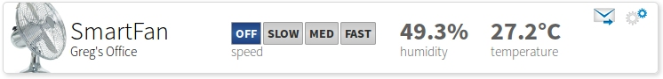

|
Smart Device Description Language
SDDL provides a standardized format for describing the capabilities of a
smart product.
SDDL serves as a common thread throughout the Canopy platform.
Canopy auto-generates embedded C code based on SDDL. The Canopy cloud components uses SDDL
to dynamically generate a REST API. The Canopy web
application uses SDDL to generate a UI for your product.
In fact, writting an SDDL file gets you 90% of the
way towards having a cloud-controllable smart device (on the software side,
anyway).
|
SDDL Documentation
SDDL Specification
|
A Quick Example
SDDL is JSON-based format. It describes the sensors and controls on a
device using special keys that begin with
"class ",
"sensor ", or
"control ". A
class is a
collection of sensors and controls, and every SDDL file contains at least
one.
{
"class canopy.example.smartfan" : {
"control speed" : {
"datatype" : "int8",
"min-value" : 0,
"max-value" : 4
},
"sensor temperature" : {
"datatype" : "float32",
"units" : "degrees_c"
},
"sensor humidity" : {
"datatype" : "float32",
"ui-numeric-display-hint" : "percentage"
}
}
}
From this description, canopy generates a default web UI for your device.
Something like:

On the embedded side, Canopy generates embedded C boilerplate code, with stubs
for you to fill in:
static bool on_change__speed(CanopyContext canopy, int8_t value)
{
/* Your code here */
return true;
}
static bool on_report_requested(CanopyContext canopy)
{
CanopyReport report = canopy_begin_report(canopy);
/* Your code here */
/* canopy_report_float32(report, "temperature", 0); */
/* canopy_report_float32(report, "humidity", 0); */
canopy_send_report(report);
return true;
}
Just implement the stubs, compile and run, and your device can be remotely
monitored and controlled from the web.
One neat aspect of Canopy is that it has special handling for
common SDDL classes. For example, if your device has a GPS sensor, you can
add the following to your SDDL:
{
"class canopy.example.smartfan" : {
...
"class gps" : {
"sensor longitude" : {
"datatype" : "float64"
},
"sensor latitude" : {
"datatype" : "float64"
}
}
}
}
The Canopy platform knows to interpret this as a GPS coordinate, and will
display the location of your device on a map.